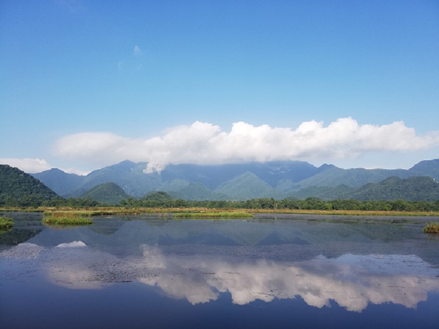
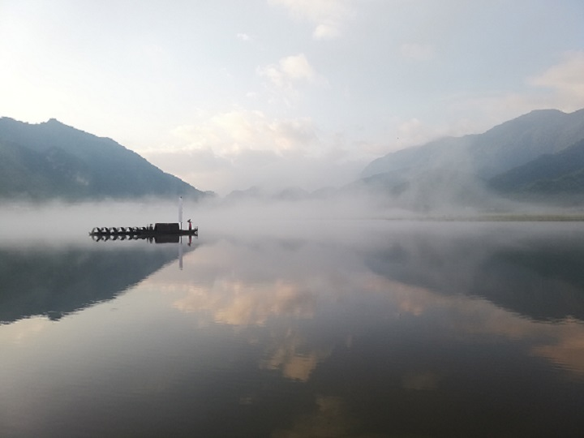
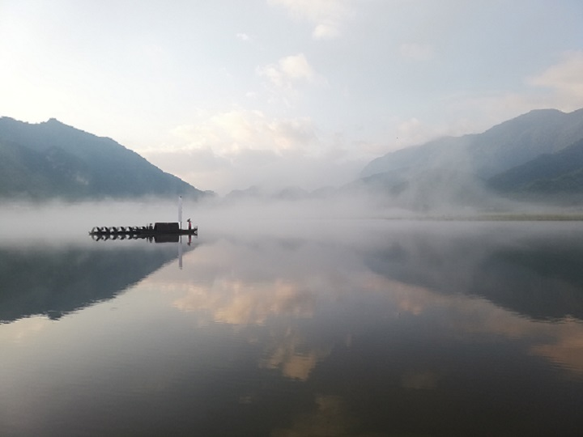
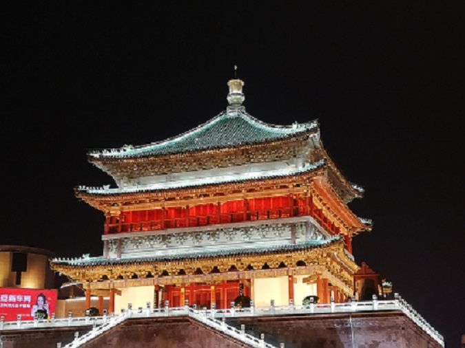
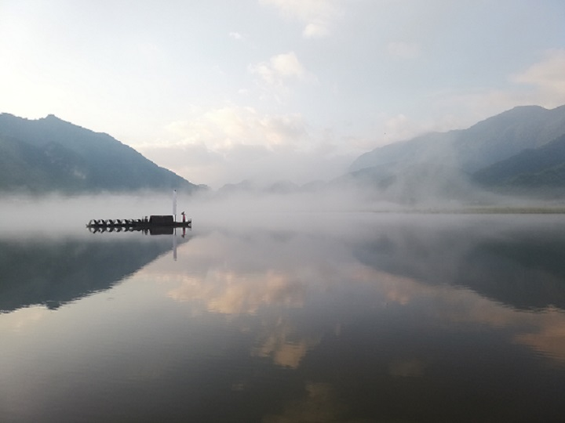
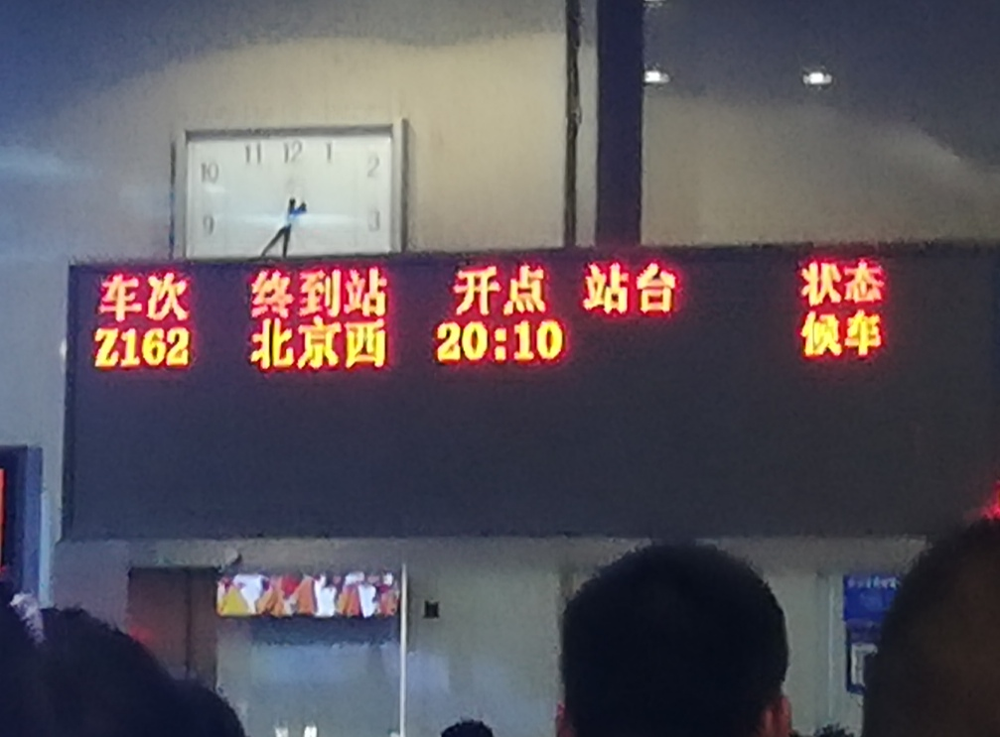

第二站——神农架
 

大九湖
暑假的第二站——神农架！ 神农架，一个天然的空调房，在炎热的酷暑，来趟神农架你会感受到自带空调的感觉。
延绵不绝的山，又高又大。进了神农架，就进入到了山的世界，新鲜的空气环绕这你，绿色仿佛是这里唯一的颜色。 “看山跑死马”，前面那座山感觉就在眼前，拐了几个弯也不见接近。明明感觉山没有很高，但往下看也看出了峡谷沟壑的样子。 一件两件的外套穿在身上，冬天的大棉被也抵挡不住凉意的侵袭。夏天的神农架，是避暑的不二之选！
2020年注定是我无法继续19年旅行的一年。 2019年我去了西安、神农架、北京，本来计划2020年要去重庆、青海、南京等地方继续我走遍祖国之旅，但这场疫情拦住了我的脚步。 回顾2019的旅程，在一张张照片中我又感受到了当时旅行的快乐、激动和沉醉。 2020年到目前为止，我虽然无法继续我的旅程，但我相信，下一站很快就会到来！

暑假两个月，第一站西安！ 西安是著名古都，环绕西安市的城墙表明了它的身份，祖国之旅一定少不了这个地方。
西安的夜晚也非常的迷人，这座古城似乎并没有被现代化改变很多。 大部分地方还是古色古香，现代化的灯光反而为它们增添了更多的神秘光彩。 西安是一个可以让人沉迷的地方，我在见她的第一面时就被古都的魅力深深捕获。

暑假的第二站——神农架！ 神农架，一个天然的空调房，在炎热的酷暑，来趟神农架你会感受到自带空调的感觉。
延绵不绝的山，又高又大。进了神农架，就进入到了山的世界，新鲜的空气环绕这你，绿色仿佛是这里唯一的颜色。 “看山跑死马”，前面那座山感觉就在眼前，拐了几个弯也不见接近。明明感觉山没有很高，但往下看也看出了峡谷沟壑的样子。 一件两件的外套穿在身上，冬天的大棉被也抵挡不住凉意的侵袭。夏天的神农架，是避暑的不二之选！

2019年的国庆是70周年大庆，而国庆期间的北京更加不平凡。 即使层层安检，一晚上的硬座也没有磨灭我对北京的热情！
19年的十一注定令人难忘，十一期间的北京也令人深深留恋。 最遗憾的还是没有看到天安门广场的升旗，大庆的天安门更加严格，在周围地铁公交都不停的情况下，早起看升旗更加的困难。 但升旗我一定会看到的，因为北京不能只去一次！